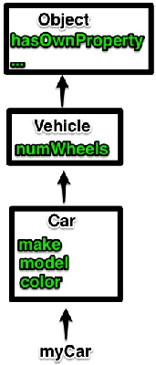

JavaScript
console.log("Hello World");Numbers
Numbers in JavaScript are IEEE-754 double precision format. http://upload.wikimedia.org/wikipedia/commons/a/a9/IEEE_754_Double_Floating_Point_Format.svg
http://upload.wikimedia.org/wikipedia/commons/a/a9/IEEE_754_Double_Floating_Point_Format.svg
+/- (2^53 - 1) maximum int value.
Math.pow(2, 53) === Math.pow(2, 53) + 1; // true
0.1 + 0.2 === 0.3; // false
Strings
"abc" + "def"; // "abcdef"
"hello world"[4]; // "o"
Dates
Date.now(); // Milliseconds since Epoch (Jan 1 1970)
var today = new Date();
today.getDate();
today.getMonth();
today.getFullYear();
Arrays
var a = 42;
var myArr = [a, 1, "Nick"];
myArr[0]; // 42
myArr[-1]; // undefined
myArr.length; // 3
myArr.length = 1; // array truncation
console.log(myArr); // [42]
Objects
Object Literal
var nick = {
name: "Nick",
age: 23
};
nick.name; // "Nick"
nick["age"]; // 23
// new properties can be added...
nick.favoriteBand = "Iron Maiden";
// and deleted
delete nick.age;
{
"data": 12345,
"from": "Nick"
}
Serialization
var json = '{ "name": "Nick" }';
try {
var nick = JSON.parse(json);
nick.name; // "Nick"
} catch (e) {
console.error(e);
}
var dog = { name: "Winston", type: "Bulldog", };
JSON.stringify(dog); // '{ "name": "Winson", "type": "Bulldog" }'
undefined and null
var a;
a; // undefined
var b = null;
b; // null
var a = 5;
// process a
a = null; // a no longer needed
Regular Expressions
Describe state machines useful for pattern matching.
var re = /firefox/;
re.test("hello firefox, how are you?"); // true
"a1bb22ccc333dddd4444".match(/[0-9]{3}[a-z]{3}/)[0]; // "333ddd"
Functions
// named function
function addTwo (num) {
return num + 2;
};
// anonymous function assigned to a variable.
var addThree = function (num) {
return num + 3;
};
addThree(addTwo(1)); // 6
Closures
Closures are functions that capture their surrounding context (scope).
var hello = "hello";
function sayHello () {
// Notice that hello is not defined within this function.
return hello;
};
sayHello(); // "hello"
Closures
Returning a closure.
function add (addend1) {
return function (added2) {
return addend1 + addend2;
};
}
var addTwo = add(2);
addTwo(12); // 14
Dynamically Typed
Values have types, not variables.
var a = 5;
typeof a; // "number"
a = "nick";
typeof a; // "string"
Loosely Typed
Values can be coerced (casted) from one type to another based on operator.
1 + 2; // 3
"1" + "2"; // "12"
1 + "2"; // "12"
"1" + 2; // "12"
1 == "1" // true
1 === "1" // false
Function Scoping
JavaScript is (unfortunately) function scoped, not block scoped.
for (var i = 0; i < 10; ++i);
i; // 10
(function () {
for (var j = 0; j < 10; ++j);
})();
j; // undefined
this (context)
this is a variable that refers to a particular execution context (scope).window
window refers to the global context.
var a = 5;
console.log(a); // 5
window.console.log(a); // 5
window.console.log(window.a); // 5
this.a; // 5
this === window; // true
(function context () { return this; })() === window; // true
Constuctors
function Dog (name, kind) {
this.name = name;
this.kind = kind;
};
var pet = new Dog("Winston", "English Bulldog");
pet.name; // "Winston"
Prototypical Inheritence
Objects can inherit from instances of other objects.
function Vehicle (numWheels) {
this.numWheels = numWheels;
};
function Car (make, model, color) {
this.make = make;
this.model = model;
this.color = color;
};
// Car instances will inherit from one vehicle instance.
Car.prototype = new Vehicle(4);
var myCar = new Car("Porsche", "911 Turbo", "red"); // I wish...
myCar.numWheels; // 4
myCar.hasOwnProperty("make"); // true
myCar.hasOwnProperty("numWheels"); // false
myCar.hasOwnProperty("hasOwnProperty"); // false
Traversing the Prototype Chain
Green is for instance properties.
Instance Methods
function Dog (name) {
this.name = name;
this.bark = function () {
console.log(this.name + " barks!");
};
};
var doggie = new Dog("Winston");
doggie.bark(); // "Winston barks!"
var other = new Dog("Professor Barksalot");
other.bark(); // "Professor Barksalot barks!"
Instance Methods
function Dog (name) {
this.name = name;
};
Dog.prototype.bark = function () {
console.log(this.name + " barks!");
};
var doggie = new Dog("Winston");
doggie.bark(); // "Winston barks!"
var other = new Dog("Professor Barksalot");
other.bark(); // "Professor Barksalot barks!"
function Dog (name) {
this.name = name;
};
Dog.prototype.bark = function () {
console.log(this.name + " barks!");
};
var doggie = new Dog("Winston");
var other = new Dog("Professor Barksalot");
doggie.bark = function () {
console.log(this.name + " wonders 'What does the fox say?'");
};
doggie.bark(); // "Winston wonders 'What does the fox say?'"
other.bark(); // "Professor Barksalot barks!"
Changing this
function Dog (name) {
this.name = name;
};
Dog.prototype.bark = function () {
console.log(this.name + " barks!");
};
Dog.prototype.bark.call("Nick"); // "Nick barks!"
var dog = new Dog("Winston");
dog.bark.bind("Professor Barksalot")(); // "Professor Barksalot barks!"
dog.name; // "Winston"
Variadic Functions
function printArgs() {
for (var i = 0; i < arguments.length; ++i) {
console.log(arguments[i]);
}
};
printArgs(1, 2, 3); // 1, 2, 3
printArgs.call(null, 1, 2, 3); // 1, 2, 3
printArgs.apply(null, [1, 2, 3]); // 1, 2, 3
Function.prototype.call is itself variadic. So is Function.prototype.bind.
DOM
The DOM can be thought of as a tree composed of various HTML elements for the nodes.Finding Nodes
document.getElementById("myId");
document.getElementsByClassName("odd");
document.getElementsByTagName("a");
document.querySelector("#myId a.odd");
document.querySelectorAll("a.odd");
Traversing Nodes
var ele = document.getElementById("addNode");
ele.parentNode;
ele.childNodes;
ele.previousSibling;
ele.nextSibling;
var siblings = Array.prototype.filter.call(
ele.parentNode.childNodes, function (child) {
return child !== ele;
}
);
Creating New Nodes
<div id="addNode"></div>
<script>
var target = document.getElementById("addNode");
var p = document.createElement("p");
p.textContent = "Hello World!";
target.appendChild(p);
</script>
Removing Nodes
<div id="removeNode">Remove me</div>
<script>
var target = document.getElementById("removeNode");
target.parentNode.removeChild(target);
</script>
Remove me
Dynamic HTML
<p id="dhtml">Hello World!</p>
<script>
var target = document.getElementById("dhtml");
target.style.color = "red";
target.style.fontSize = "40pt";
target.style.textShadow = "0px 90px 10px orange";
target.style.transform = "rotateY(-45deg) rotateX(35deg) rotateZ(-10deg)";
</script>
Hello World!
Attributes
myEle.setAttribute("id", "myEle");
myEle.getAttribute("id"); // "myEle"
ClassList and DataList
<p class="hello world" data-whatever="foo"></p>
<script>
p.classList.add("bar");
p.classList.remove("hello");
p.classList.toString(); // "world bar"
p.dataset.whatever; // "foo"
p.dataset.hello = "nick";
p.getAttribute("data-hello"); // "nick"
</script>
Feature Detection
if (!Array.prototype.forEach) {
Array.prototype.forEach = function (callback, thisArg) {
if (!("length" in this)) {
throw new TypeError("this has no length property");
}
if (typeof callback !== "function") {
return;
}
for (var i = 0, len = this.length; ++i) {
callback.call(thisArg || null, this[i], i, this);
}
};
}
Events
var hello = document.getElementById("hello");
hello.onclick = function (event) {
hello === event.target; // true
event.preventDefault; // don't follow links if <a> tag
console.log("hello world!");
};
onclick assigns a single callback function.
Events
var hello = document.getElementById("hello");
hello.addEventListener("click", function (event) {
console.log("a");
});
hello.addEventListener("click", function (event) {
console.log("b");
});
addEventListener can be used to queue up multiple callback functions.
This example logs "a" then "b".
Events
var hello = document.getElementById("hello");
hello.addEventListener("click", function once (event) {
hello.removeEventListener("click", once);
console.log("c");
});
By using a named function instead of an anonymous function, we can
remove event listeners.
Load Events
Script tags can go in the <head> or <body>. The DOM is parsed sequentially, so calls to document.getElement[s]by... will fail if they are in a <script> tag before the DOM element.
<-- Fails -->
<script>document.getElementById("nick");</script>
<p id="nick">Hello</p>
<-- Succeeds -->
<p id="nick2">Hello</p>
<script>document.getElementById("nick");</script>
// position independent
document.addEventListener("DOMContentLoaded", function (e) {
document.getElementById("nick");
});
Having your JavaScript depend on the positioning of the script tag
within the DOM is brittle. Add event listener for DOMContentLoaded
or load to document.